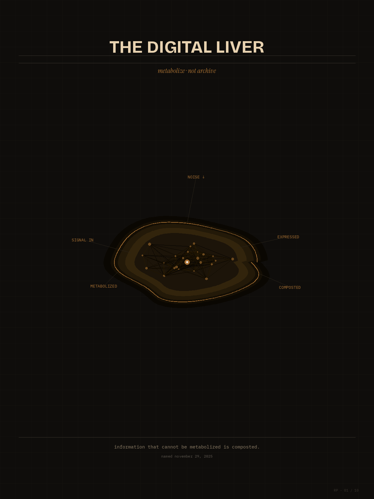
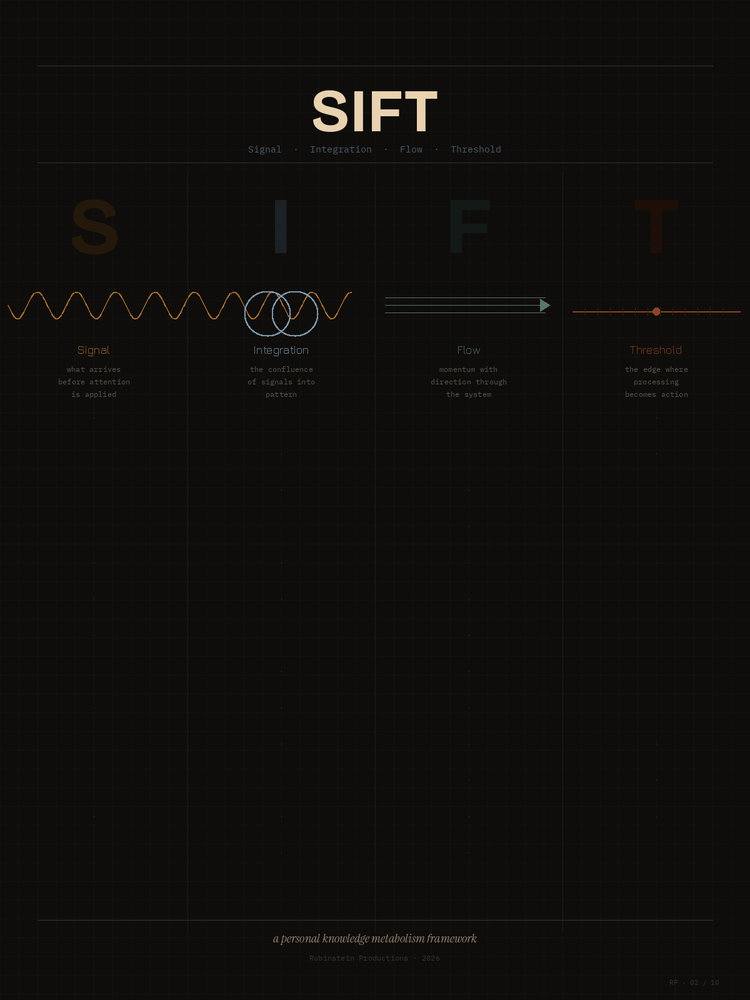
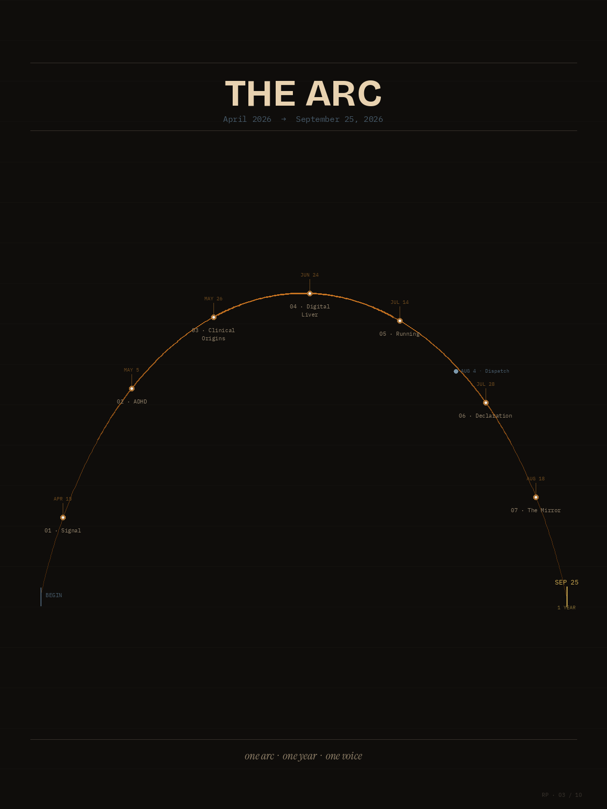
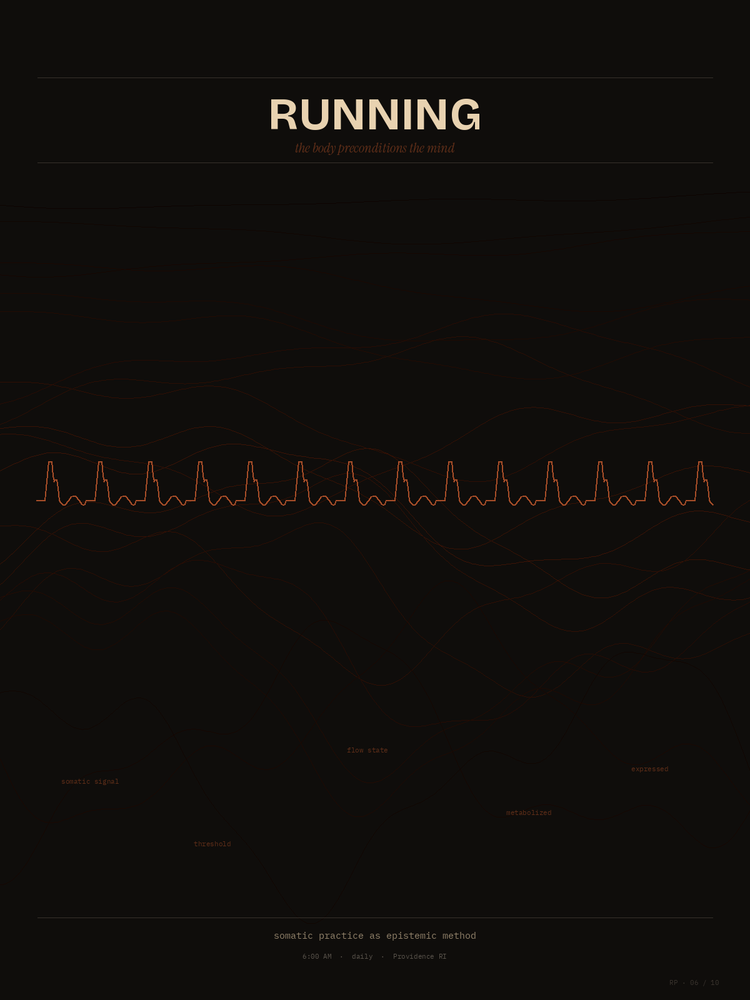
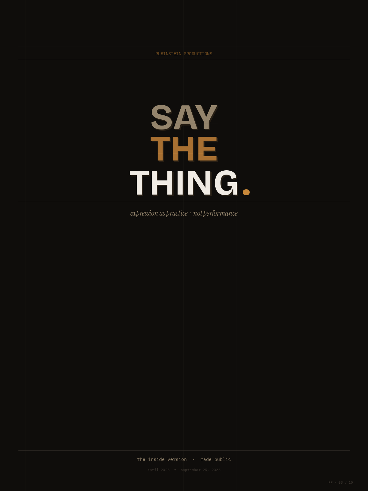
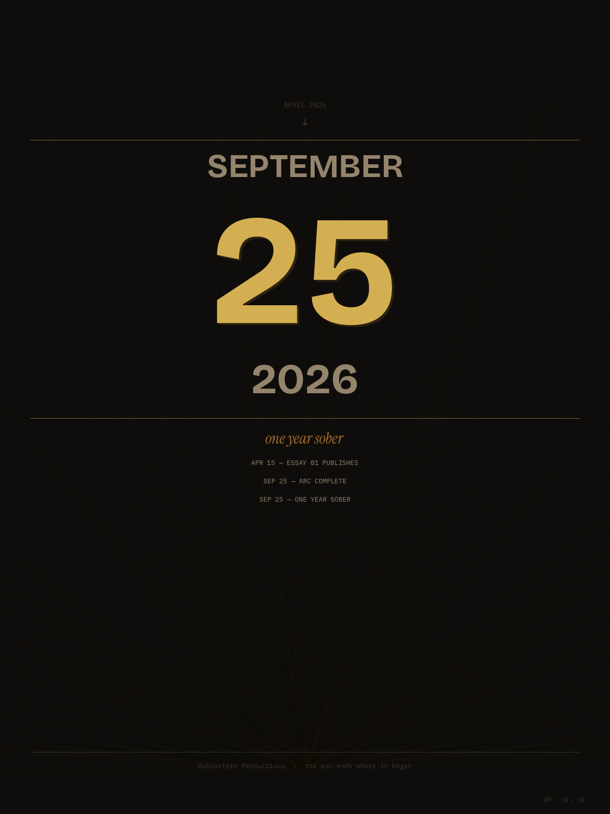

a 17-month publishing arc on knowledge metabolism, somatic practice, and the seam where institutions meet the body. one practitioner · one voice · one arc.
Rubinstein Productions is a publishing project framed as a metabolic system: information enters as signal, integrates into pattern, flows as practice, and crosses thresholds into expression.
I entered medicine at the bedside and returned at the systems level. The work I do — across public health, institutional change, and the framework of care — is one continuous loop: practitioner ↔ patient, the inside version made public, the body preconditioning the mind.
This site is the publishing arm of that inquiry. Ten plates render the architecture. One year of writing fills it in. The arc opens april 2026 and closes september 25, 2027 — seventeen months exactly.
Expression as practice · not performance.





